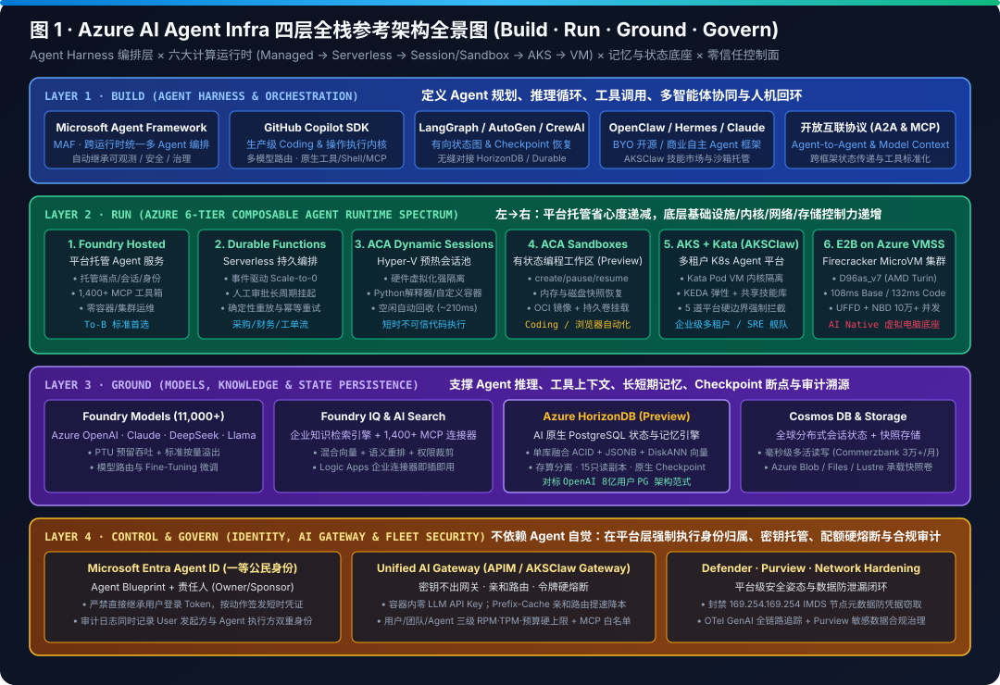

MICROSOFT AZURE AI AGENT INFRASTRUCTURE PLAYBOOK (2026 EDITION)
在 Azure 上构建、运行与扩展生产级 AI Agent 基础设施
融合四层全栈参考架构（Build · Run · Ground · Govern）、六大计算运行时光谱（Foundry Hosted → Durable Functions → ACA Dynamic Sessions → ACA Sandboxes → AKS Kata / AKSClaw → E2B on VMSS D96as_v7）、状态持久化三剑客（HorizonDB · Cosmos DB · UFFD/NBD 快照）与现场五步落地法。
6 Runtimes
从全托管 Foundry 到自建 MicroVM 连续光谱
108 ms / 132 ms
D96as_v7 (AMD Turin) E2B Base / CI 启动实测
100,000+
APIM 按动态 Host 独立限流并发沙箱会话
5 Hard Gates
AKSClaw 平台强制安全硬边界 (零容器密钥)
1,400+ MCP
Foundry Toolboxes 企业连接器 + Entra Agent ID
一、四层全栈参考架构交互解构（点击任一层级查看深度机制与防坑指南）
计算与状态解耦、沙箱硬件虚拟化隔离、平台级零信任身份是生产级 Agent 的三大基石。
Layer 1 · Build (Agent Harness 编排与执行循环层)
Microsoft Agent Framework (MAF) · GitHub Copilot SDK · LangGraph · OpenClaw · Hermes · MCP/A2A
Layer 2 · Run (Azure 6-Tier Agent Runtime 计算与沙箱层)
Foundry Hosted · Durable Functions · ACA Dynamic Sessions · ACA Sandboxes · AKS Kata · E2B on VMSS
Layer 3 · Ground (Models, Knowledge & State Persistence)
Foundry Models (11K+) · AI Search / Foundry IQ · Azure HorizonDB (Preview) · Cosmos DB · UFFD/NBD Snapshot
Layer 4 · Control & Govern (Identity, AI Gateway & Fleet Security)
Microsoft Entra Agent ID · Unified AI Gateway (APIM) · 169.254.169.254 IMDS Block · Defender & Purview
MAF + GitHub Copilot SDK + BYO Harnesses
Layer 1 · Build (Agent Harness 编排与执行循环层)
- Microsoft Agent Framework (MAF)：统一跨单智能体与多智能体工作流的编排标准，运行在 ACA/AKS/Functions 上时自动继承可观测性、Entra Agent ID 与安全合规策略。
- GitHub Copilot SDK：将经过生产验证的 Coding Agent 推理循环（规划、文件编辑、Shell 执行、MCP 调用）直接作为可编程内核嵌入企业自建管线。
- BYO 开源框架自由混部：通过 AKSClaw 通用容器契约，同一集群可同时运行 OpenClaw、Hermes、LangGraph、CrewAI 等异构 Agent 实例。
# MAF + GitHub Copilot SDK 协同回路 DiagnosisAgent(LangGraph) -> CodingAgent(CopilotSDK in ACA Sandbox) -> ComplianceAgent(Foundry)
二、高清矢量架构图与工作流图谱（8 张自包含 SVG 图集）
点击下方标签切换查看四层全景图、六大运行时矩阵、双阶段决策树、AKSClaw、E2B on VMSS、Firecracker UFFD/NBD 内部机理、多智能体工作流与五步落地法。

图 1 · Azure AI Agent Infra 四层全栈参考架构全景图 (Build · Run · Ground · Govern)
三、Azure 六大 Agent Runtime 深度选型对比表
| 评估维度 | 1. Foundry Hosted Agents | 2. Durable Functions | 3. ACA Dynamic Sessions | 4. ACA Sandboxes (Preview) | 5. AKS + Kata (`AKSClaw`) | 6. E2B on VMSS (`D96as_v7`) |
|---|---|---|---|---|---|---|
| 隔离边界 | 托管服务级边界 | Serverless Worker | Hyper-V 硬件虚拟化 | 隔离容器 + 端口/网络策略 | Kata Pod VM 独立内核 | KVM + Firecracker + ns-N |
| 不可信代码执行 | 不支持 (仅受控工具) | 不支持 (控制流编排) | 原生支持 (Python/容器) | 原生支持 (完整 OCI + Shell) | 原生支持 (Pod VM CLI/脚本) | 原生支持 (完整 OS + GUI 桌面) |
| 状态与快照机制 | 托管线程 / Cosmos DB | Durable 检查点自动重放 | 空闲回收即清零 (需外置 DB) | 内存/磁盘快照 + 持久卷 | 共享只读技能 PV + 独占状态 PV | UFFD 内存按需缺页 + NBD 差分块 |
| 实测/典型恢复延迟 | ~180–850 ms | ~95 ms 热唤醒 | ~210 ms (预热池分配) | ~320 ms (快照恢复) | ~160–1400 ms | 108 ms Base / 132 ms CI V1 |
| 典型黄金场景 | To-B 标准企业 API 助手 | 采购/财务跨天人工审批流 | 短平快代码解释器/文件解析 | Coding Agent / 浏览器工作台 | 多租户研发/SRE 舰队平台 | 10万+ 并发云端虚拟电脑 (Manus) |
四、Playbook 四维技术底座与商机成熟度交互自测器（脱敏方法论）
勾选客户当前在 5 个月窗口内已持续活跃（≥3个月且含最近连续 2 个月）的技术信号，实时判定 Strong ACR (P1) / Potential (P2) 梯队及推荐五步推进动作：
P1 · Strong ACR (立即推进目标架构与 Workshop)
四维底座覆盖数：4 / 4 · 潜客门禁通过：5 / 5
• Strong Route A (Specific Anchor): ✅ 已命中
• Strong Route B (≥3 Foundations): ✅ 已命中
• $10K Foundry Models Gate: ℹ️ 未达 $10K/月 (不影响真实 ACR 金额，仍可由非模型路径晋级 P1)
推荐下一步现场动作 (5-Step Playbook)：
直接进入 Step 03 Define & Step 04 Validate：组织半日/一日 Hands-on Workshop + 目标架构白板推演 (ACA Sandbox / AKSClaw / HorizonDB)。
直接进入 Step 03 Define & Step 04 Validate：组织半日/一日 Hands-on Workshop + 目标架构白板推演 (ACA Sandbox / AKSClaw / HorizonDB)。